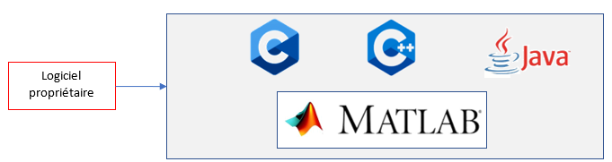
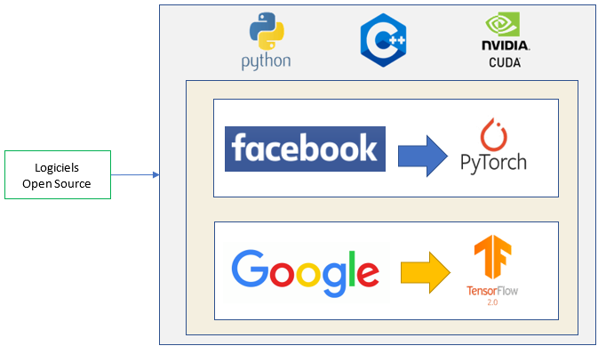

Retour d’expérience et comparaison entre quelques outils
Droits de licence
Nous avons initialement choisi de prendre pour objets de comparaison 3 outils de deep learnig que sont Matlab, Pytorch et Tensorflow.
Le premier étant propriétaire avec une licence onéreuse (de 800 à 2000€), nous avons voulu nous renseigner sur l’offre étudiante qui elle est toujours payante mais plus abordable (de 35 à 69€).
Pour un projet tutoré de découverte, nous avons donc préféré nous attarder sur les deux derniers qui en plus d’être open source, ont été respectivement réalisé par deux grandes firmes internationales que sont Facebook(PyTorch) et Google(TensorFlow).
Les droits de licence ont donc été notre premier critère de choix.


Popularité et communauté
Historiquement, entre Pytorch et TensorFlow, c’est Tensorflow a été le premier sur le marché en 2015 suivi de près par Pytorch en 2016.
TensorFlow a donc eu l’avantage d’être le premier sur le marché.
Les deux outils dispose d'une très large documentation sur les sources officielles.
Ils possèdent également des communautés toutes les deux très présentes.
En effet, il est facile de trouver des tutoriels et forums, de la communauté, pour les problèmes et questionnement.
On remarque cependant une communauté plus grande chez TensorFlow puisqu’il fût le premier sur le marché.
Collaborateurs de Tensor:
Collaborateurs de Pytorch:
Secteur d’utilisation
Ici TensorFlow et Pytorch sont tous les deux d’excellents outils en matière de deep learning.
Cependant, ces outils sont utilisés principalement par deux grandes famille d’utilisateurs. Le premier est celui des professionnels, grandes firmes et la seconde, les chercheurs et testeurs.
Globalement TensorFlow a de meilleures performances et est plus souple que Pytorch, ce qui fait de lui un outil qui attire plus les professionnels.
Pytorch lui en revanche est très plébiscité par les chercheurs.
Un peu plus d’une dizaine de secteurs sont répertoriés et on peut déjà voir les principaux impacts de l’utilisation du deep learning ainsi que la richesse de données qui leur ait associée.
Quelques secteurs utilisant le machine learning ainsi que les impacts de celui-ci :
Automobile
- Identifier des itinéraires, des incidents/accidents routiers.
- Prédire les défaillances d’une voiture
Industrie
- Prédire les défaillances de machines et augmenter leur productivité
- Optimiser les procédures complexes de fabrication en temps réel
Biens de consommation
- Optimiser le ratio stock/réassort/vente ainsi que la logistique
- Recommandations personnalisées
Résumé des avantages de chaque outil :
Avantages Pytorch:
- Débogage simplifié
- Ajout facile d’extensions customisées
- Asynchronisation du traitement des données
- Est programmé en Python
Avantages Tensorflow
- Sauvegarde plus complète d’un modèle
- Interface plus détaillée
- Facilité de déploiement
- Performant sur des projets de grande envergures
Conclusion
Pour conclure, beaucoup de tutoriels et comparaisons disponible sur le net s'accordent à le dire, il n’y a pas de meilleur outil.
Ce sont deux très bons outils adaptés à différents types de projets.
TensorFlow est idéal pour des
projet de grande envergure, des projets sur des systèmes embarqués, de mise en production.
Tandis que PyTorch sera plus adapté à de petits projets. Les préférences personnelles sont aussi à prendre en compte, PyTorch est programmé en python ce qui ravira les fans de ce langage.
Tandis que TensorFlow a un suivi visuel plus détaillé.